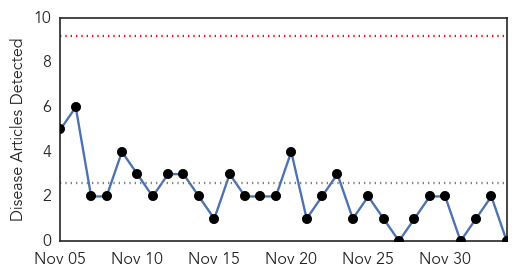

Cholera
30-Day Web Trend
0 alerts, 0 warnings

30-Day Twitter Trend
1 alerts, 0 warnings

Article Locations

Article Confidences

Top Articles:
- 0.963
- Rice could make cholera treatment more effective
- 0.951
- Rice could make cholera treatment more effective
- 0.893
- Local gov’t responsible for cholera prevention
- 0.868
- Keta fights cholera in 2014 -
- 0.826
- Cholera prevention is the duty of local govt. -
- 0.667
- Homeland Security News Wire
- 0.530
- UCSF's battle with tuberculosis
Top Tweets:
- 0.833
- RT: NEWS SCAN: Saudi MERS cases continue; Chikungunya hot spots; Cholera in the Caribbean http://t.co/L5evGWeqXn
- 0.649
- My vaccine hero 4 cholera, Dr. Sakoba Keita from Guinea http://t.co/NZ5IpypxEn featured in the NYT for Ebola work http://t.co/GxygUzZsq2
Chikungunya
30-Day Web Trend
0 alerts, 0 warnings

30-Day Twitter Trend
1 alerts, 0 warnings
Article Locations

Article Confidences

Top Articles:
-
No articles found for Dec 04, 2014
Top Tweets:
-
No tweets found for Dec 04, 2014